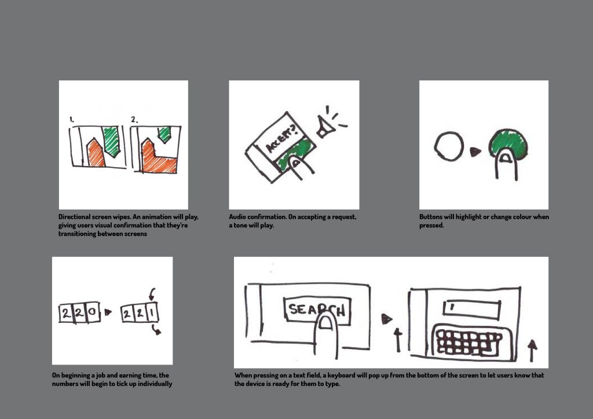
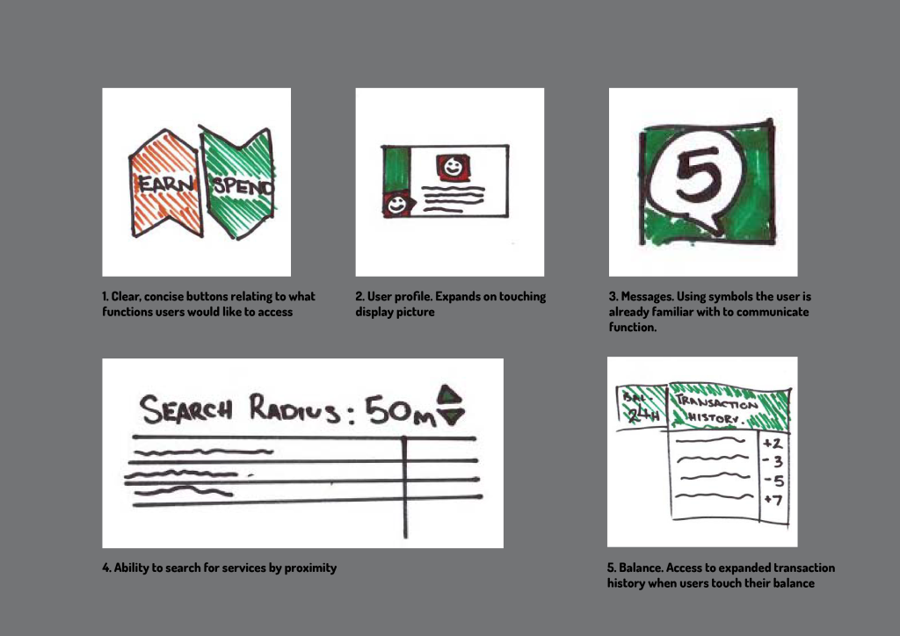
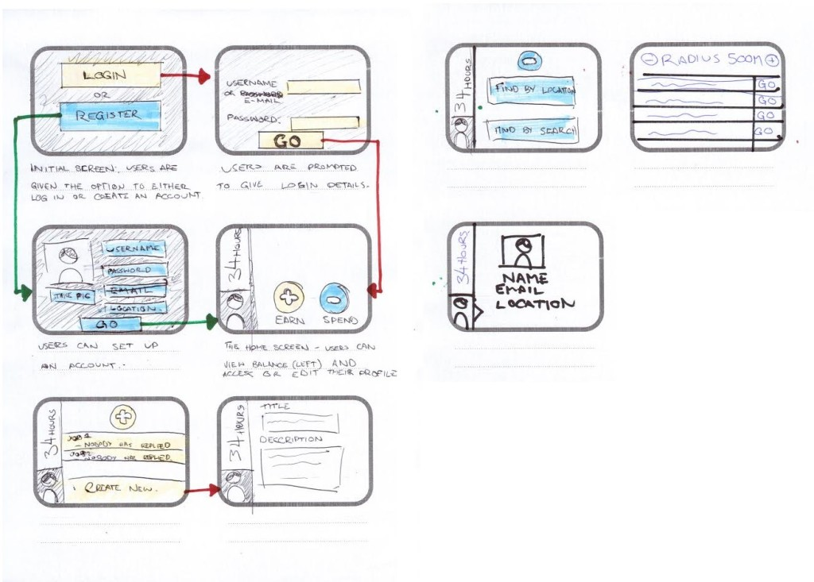
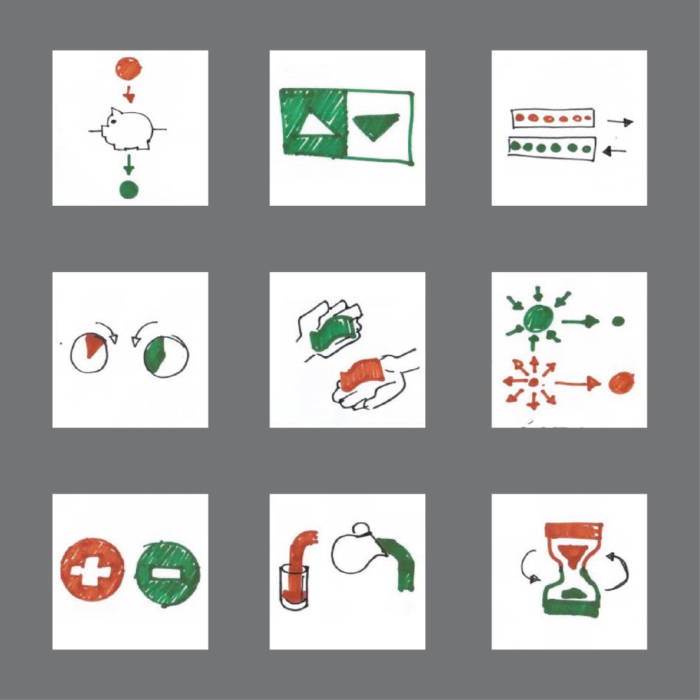

Designing a Timebank
This timebank user interface was designed as part of Sliderule’s User Experience Design online course. The description, taken from the project instructions reads; “This project consists of designing a user interface (UI) for a mobile timebank device that fits in your wallet. A timebank allows people to exchange their time for another person’s time. To keep things simple, everyone’s time has equal value: my hour is worth the same amount as your hour.”
Below is an overview of the final UI design after user testing; you can see below how users navigate between each screen. For the purpose of the project I’ve assumed the device mentioned in the outline is similar to a modern Smartphone with a touch-screen interface, just with the dimensions of a business card.

Ideation
Below are the initial sketches exploring discoverability and developing a conceptual model for the timebank.
The first step is to create a series of sketches to develop a conceptual model for adding and subtracting time. I tried to avoid creating the implication that subtracting time was a negative or bad thing, so I chose to avoid the colour red and instead used the colour orange.
Next are some examples of discoverability; things that help the user cross the ‘Gulf of Evaluation’ – communicating to the user which features allow them to achieve their goals at a glance.
As well as 5 examples of feedback the user could be provided with, to help them overcome the ‘Gulf of Execution’ and indicate that their actions have had the desired effect.
 ]Sketching
The third part of the project involves taking the Conceptual Models as well as ideas for Discoverability and Feedback and developing them into wireframes of what the app would look like, before user testing.
After user testing the paper prototypes, I developed wireframes using Photoshop. During this process, many ideas were scrapped due to not being as user-friendly as initially envisioned and new ones were added.
Wireframing
Starting at the top of the diagram; upon using the device for the first time, or if the user is not logged in, they’ll be taken to a screen where they’re given the opportunity to either set up a new account or log in using existing details.
After this they’ll be taken to a Home Screen where they can navigate between major functions; either earning time, or exchanging their accrued hours for services. On the side is a bar which allows the user to view their balance, communicate with other users and view their profile.

Iteration
Initial versions of this interface were designed to have the user drag icons in the direction of the arrow to move to the desired screen. While testing this, users would mostly press, so rather than attempt to force the idea of swipe gestures I went instead with traditional buttons.

To give the user feedback, I had the buttons darken when pressed. It feels like the simplest way to communicate to the user that the button on the touchscreen has been successfully pressed.
I tried to match various actions to certain colours, to give users a sense of where they were within the app without needing to read. Everything relating to account management is orange; all functions that involve earning time are green and anything that involves the user spending time is purple.
Ultimately, designing a UI for the first time is an extremely challenging task. Having to resolve what you want from the UI with what the User wants it to do, to having to scrap features or ideas that you feel strongly about because they weren’t communicated well enough to the user, or simply were not as enjoyable to use as you’d envision them. I feel there’s a lot of scope to develop this, however, given what was outlined in the project brief I feel I’ve achieved what I set out to do.